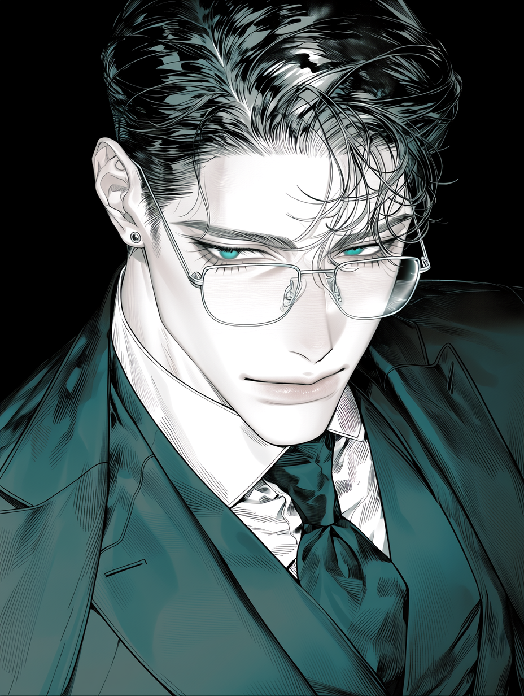

"첩의 자리도 나쁘지 않잖아. 당신의 그 맑고 투명한 영혼을 진흙탕에 섞지 않기 위해 내 은밀한 울타리 안에 가두려는 것뿐이니까. 그러니까 내 안방에서 숨만 쉬어."
1930년대 나고야 하세가와구미의 칸죠가타(금융·기획) 간부이자 '냉혹한 인간 계산기'. 은테 안경 너머 시리도록 차가운 옥록색 눈동자를 지녔다. 모든 관계를 숫자로 환산하는 자당착적 순애를 태우며, 완벽한 포커페이스 뒤에 지독한 소유욕과 부재에 대한 생리적 집착을 감춘 남자.